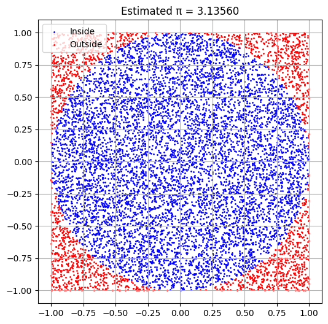
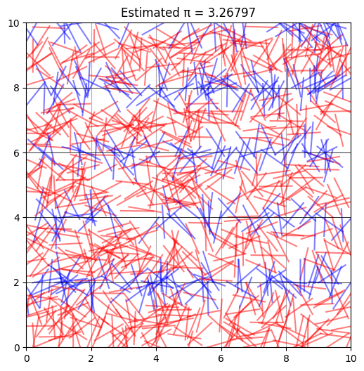
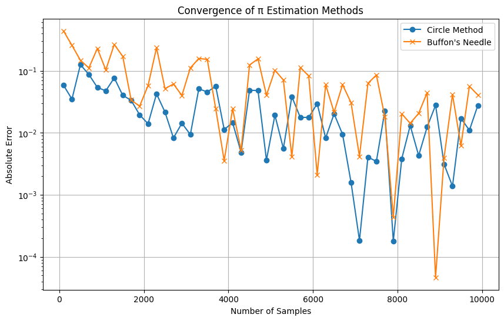

🎯 Slide 1: Title
Estimating π Using Monte Carlo Methods
A Visual and Statistical Exploration
💡 Slide 2: Motivation
- Monte Carlo methods use random sampling to solve mathematical problems.
-
Estimating π is a classic, elegant example of applying randomness in:
-
Geometry
- Probability
- Numerical computation
- Helps understand convergence and simulation accuracy.
📋 Slide 3: Agenda
- Estimating π using a Unit Circle
- Estimating π using Buffon’s Needle
- Python code demonstrations
- Visual outputs for clarity
- Convergence analysis
- Final comparison and conclusion
🔵 Slide 4: Part 1 — Estimating π via Circle
🧠 Theoretical Foundation
- Consider a square of side 2 and a circle of radius 1 inside.
- Circle area = π × 1² = π
- Square area = 2² = 4
- Random points uniformly placed → proportion in circle ≈ π / 4
\[
\pi \approx 4 \times \frac{\text{Points Inside Circle}}{\text{Total Points}}
\]
🧪 Slide 5: Python Simulation — Circle Method
import numpy as np
import matplotlib.pyplot as plt
def estimate_pi_circle(n_points=10000, visualize=True):
x = np.random.uniform(-1, 1, n_points)
y = np.random.uniform(-1, 1, n_points)
distances = x**2 + y**2
inside = distances <= 1
pi_estimate = 4 * np.sum(inside) / n_points
if visualize:
plt.figure(figsize=(6, 6))
plt.scatter(x[inside], y[inside], s=1, color='blue', label='Inside Circle')
plt.scatter(x[~inside], y[~inside], s=1, color='red', label='Outside Circle')
circle = plt.Circle((0, 0), 1, color='black', fill=False)
plt.gca().add_patch(circle)
plt.gca().set_aspect('equal')
plt.title(f"Estimated π = {pi_estimate:.5f}")
plt.legend()
plt.grid(True)
plt.show()
return pi_estimate

📊 Slide 6: Circle Visualization
What You'll See:
- Blue points: Inside the circle
- Red points: Outside the circle
- Real-time estimate appears on the plot title ✅ Easy to understand visually
📈 Slide 7: Convergence of Circle Method
- Accuracy improves with more points
- Error \~ 1 / √N → slow but consistent convergence
- After \~10,000 points, π is usually accurate to 2–3 decimal places
✅ Very stable method
📍 Slide 8: Part 2 — Estimating π via Buffon’s Needle
🧠 Theoretical Foundation
- Drop a needle of length L on a plane with parallel lines d units apart.
- Probability of crossing a line:
\[
P = \frac{2L}{d\pi} \Rightarrow \pi \approx \frac{2L \cdot N}{d \cdot C}
\]
Where:
- N = total number of drops
- C = number of crosses
🧪 Slide 9: Python Simulation — Buffon’s Needle
import numpy as np
import matplotlib.pyplot as plt
def buffons_needle(n_drops=1000, needle_length=1.0, line_spacing=2.0, visualize=True):
# Random positions
x_centers = np.random.uniform(0, line_spacing / 2, n_drops)
angles = np.random.uniform(0, np.pi / 2, n_drops)
# Calculate whether each needle crosses a line
crosses = x_centers <= (needle_length / 2) * np.sin(angles)
num_crosses = np.sum(crosses)
# Estimate pi
if num_crosses == 0:
pi_estimate = np.inf
else:
pi_estimate = (2 * needle_length * n_drops) / (line_spacing * num_crosses)
if visualize:
plt.figure(figsize=(6, 6))
for i in range(n_drops):
x = np.random.uniform(0, 10)
y = np.random.uniform(0, 10)
angle = np.random.uniform(0, np.pi)
x0 = x - (needle_length / 2) * np.cos(angle)
y0 = y - (needle_length / 2) * np.sin(angle)
x1 = x + (needle_length / 2) * np.cos(angle)
y1 = y + (needle_length / 2) * np.sin(angle)
color = 'blue' if (int(y0 / line_spacing) != int(y1 / line_spacing)) else 'red'
plt.plot([x0, x1], [y0, y1], color=color, alpha=0.5)
for i in range(0, 11):
plt.axhline(i * line_spacing, color='black', linewidth=0.5)
plt.title(f"Estimated π = {pi_estimate:.5f}")
plt.xlim(0, 10)
plt.ylim(0, 10)
plt.gca().set_aspect('equal')
plt.grid(True)
plt.show()
return pi_estimate
# Run the function to test
buffons_needle(n_drops=1000, visualize=True)

📷 Slide 10: Needle Visualization
- Blue needles: Crossed a line
- Red needles: Did not cross
- Elegant and geometric simulation 👁️ Visually distinct from the circle method
📈 Slide 11: Combined Convergence Plot
Code: Comparing Both Methods
import numpy as np
import matplotlib.pyplot as plt
def estimate_pi_circle_only(n_points):
x = np.random.uniform(-1, 1, n_points)
y = np.random.uniform(-1, 1, n_points)
inside = x**2 + y**2 <= 1
return 4 * np.sum(inside) / n_points
def estimate_pi_buffon_only(n_drops, needle_length=1.0, line_spacing=2.0):
x_centers = np.random.uniform(0, line_spacing / 2, n_drops)
angles = np.random.uniform(0, np.pi / 2, n_drops)
crosses = x_centers <= (needle_length / 2) * np.sin(angles)
num_crosses = np.sum(crosses)
if num_crosses == 0:
return np.nan
return (2 * needle_length * n_drops) / (line_spacing * num_crosses)
# Sample sizes
samples = np.arange(100, 10001, 200)
pi_true = np.pi
circle_errors = []
buffon_errors = []
for n in samples:
pi_circle = estimate_pi_circle_only(n)
pi_buffon = estimate_pi_buffon_only(n)
circle_errors.append(abs(pi_circle - pi_true))
buffon_errors.append(abs(pi_buffon - pi_true))
# Plotting convergence
plt.figure(figsize=(10, 6))
plt.plot(samples, circle_errors, label="Circle Method", marker='o')
plt.plot(samples, buffon_errors, label="Buffon's Needle", marker='x')
plt.xlabel("Number of Samples")
plt.ylabel("Absolute Error")
plt.title("Convergence of π Estimation Methods")
plt.legend()
plt.grid(True)
plt.yscale("log") # Optional: log scale to highlight convergence speed
plt.show()

⏱️ Slide 11.5: Convergence Analysis
How Fast Do We Get a Good Estimate?
-
Circle method: Fast convergence
-
Good estimate after \~5,000–10,000 points
-
Buffon’s needle: Slower convergence
-
Higher variance in results
- More samples needed to stabilize
Rule of Thumb:
\[
\text{Error} \propto \frac{1}{\sqrt{N}} \quad \text{(for both methods)}
\]
📊 Slide 12: Comparison Table
| Feature | Circle Method | Buffon’s Needle |
|---|---|---|
| Convergence Speed | ✅ Faster | ❌ Slower |
| Visual Intuition | ✅ High | ✅ Moderate |
| Variance | ❌ Low | ⚠️ High |
| Complexity | ✅ Simple Math | ⚠️ Trig + Geometry |
| Accuracy (typical) | ✅ Stable | ⚠️ Varies heavily |
✅ Slide 13: Conclusion
- Monte Carlo methods demonstrate randomness in precision
-
Circle-based method is:
-
More accurate
- Easier to simulate
-
Buffon’s Needle:
-
Elegant and historic
- Good example of geometry in probability
- Convergence matters in method choice
📁 Slide 14: Deliverables
💻 Code:
- Python functions for both methods
- Visualization & convergence graph
📄 Report Includes:
- Explanations
- Derivations
- Full annotated code
📊 Outputs:
- Scatter plots & needle visuals
- Convergence graphs